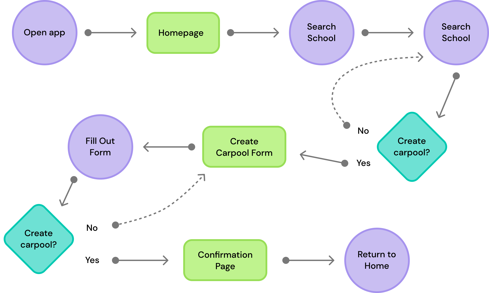
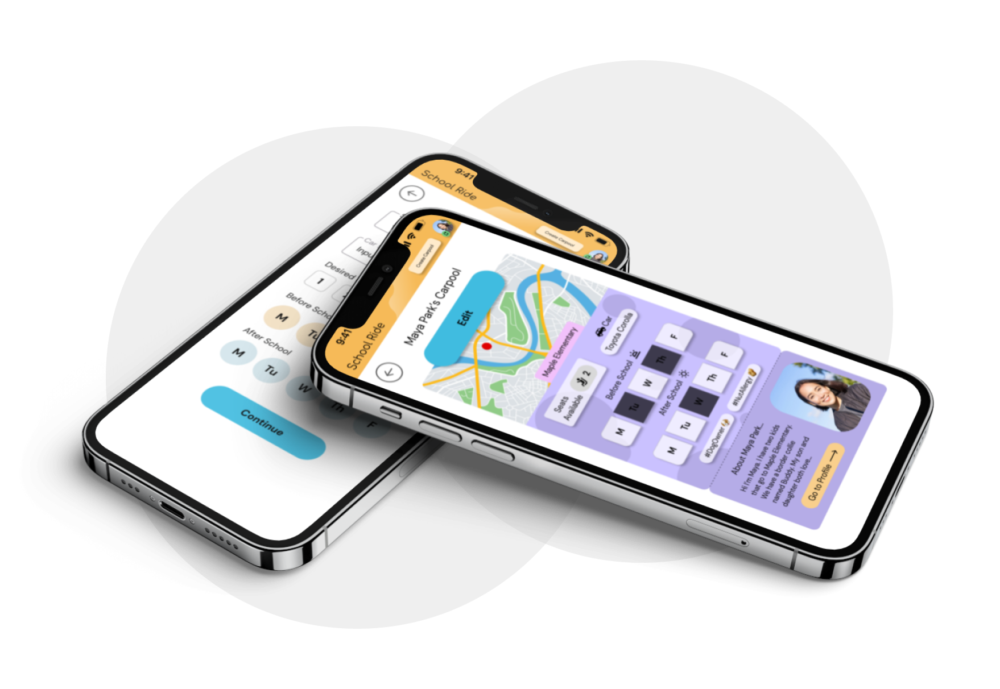

| |
Overview |
School Ride is a carpool app for parents. Users can create and/or
join local carpools that will get their kids to and from school.
|
Role |
Role: Designer
Scope: 2 months
Platform: iOS Mobile App
|
Responsibilities |
I handled all aspects of the design process from beginning to end, as the singular
designer working on this project. |
Goal
The focus of this project was to provides users with a convenient way to get their
kids to school that works for their schedule. The app needed to be flexible and
easy to use so that parents can join carpools without a hassle.
The number one priority was the safety of the children. The app must make the
user’s feel that it is secure and trustworthy, and live up to those expectations.
Challenges
- Safety barriers need to be in place to protect sensitive information.
- Designs must be equitable and accessible.
- Develop an in-app culture that encourages safety and protection.
Competitive Audit
Research began by look into apps other carpool apps that shared the same target users as my app.
By reading the reviews of those apps I learned which demographics would need to be represented in
my personas, as well as what other app’s were lacking.
From this I created three personas to represent each user’s situation/demographic.
 User personas.
User personas.
Pain Points
My research also revealed these pain points in the competitor’s apps.
Other apps...
- Do not consider the number of seats available in a carpool.
- Do not show a list of carpool’s the user has joined.
- Do not let you refine results based on schedule, or individual child.
All of these pain point’s would be addressed in my final prototype.
User Flow
My initial user flow for creating a new carpool. The final app does not include
the ability to search a school before getting to the create carpool form.

User Flow for creating a carpool.
Breakthrough
A major breakthrough point for me was designing the card customization. I was struggling with
feelings of insecurity with my designs. I felt that they were too bland and amateur.
I came up with many designs for the card’s, and not all made the cut. I altered the color
palettes for clarity and consistency several times until I felt it would be interesting but
not distracting from the information.
The addition of these cards took the Homepage from dull to vibrant.
This is the final component set, with 7 color choices, and 5 patterns:
 Card customization.
Card customization.
Final Prototype

Final prototype mockup.
The final result was a comprehensive carpool app that allowed users to create or join carpools,
and communicate with drivers or passengers through an in-app messaging system.
Safety features:
- sensitive information like addresses, or phone numbers are hidden unless the user has
approved for you to view it
- in app messaging system allows parents to coordinate meet ups with drivers and passengers
Carpools can be views on the homepage, and results can be refined by schedule, school, or
individual child. Users manage their carpools in one place with ease, making leaving carpools
or deleting carpools simple. Top bar allows users to reach the notification center, messages,
profile, create a carpool, or return to home from anywhere in the app.
Notification center tells drivers or passengers of any changes to carpools, as well as new
messages, and information access requests.
View Prototype →
This was my first design project ever. I learned everything about figma and design from
creating this app. It taught me the whole design process, begin to end. It also gave me confidence
and experience with designing, which is priceless.
It was deeply satisfying to see the final product after all my hard work. I really enjoyed
brainstorming all the possibilities and needs of my users, and then getting to bring my ideas into
reality. My app got bigger and more thorough as I went along and it was a lot of fun.
What I learned:
-
How to establish trust with users
-
Ways to profect information with design features
-
How to fit a lot of information into a small space
-
All the steps of the design process, from beginning to end
-
Most imporantly, how to use Figma!